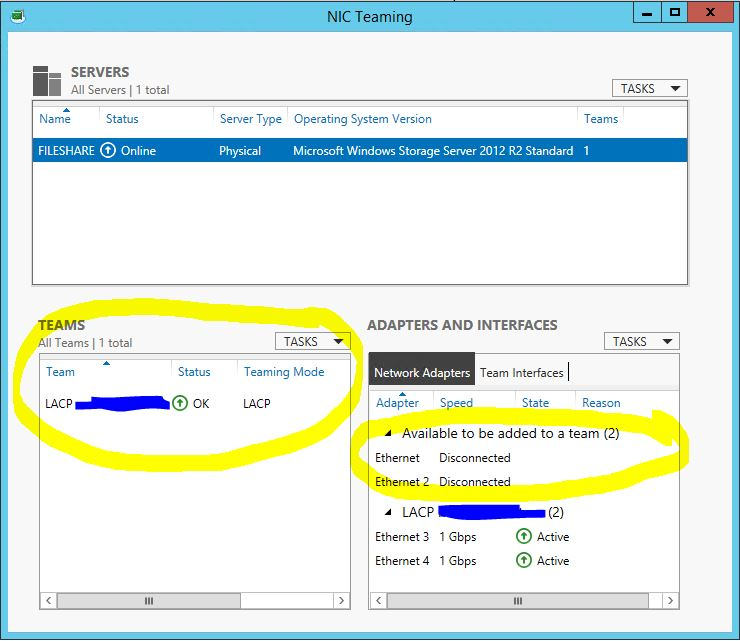
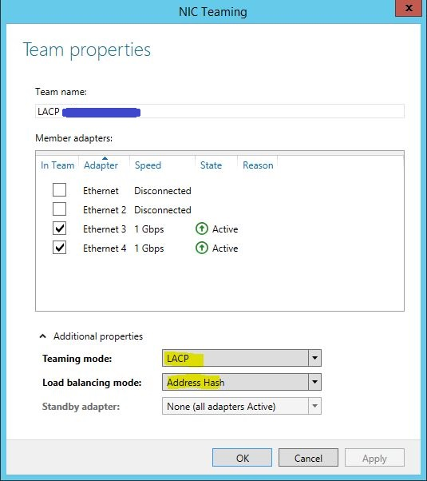

General¶
Check which DC authenticated with: echo %logonserver%
Download Firefox from CLI¶
# In PowerShell:
wget -O FirefoxSetup.exe "https://download.mozilla.org/?product=firefox-latest&os=win64&lang=en-US"
Operations Masters¶
Forest¶
Domain Naming Schema
Domain¶
Relative Identifier (RID) Infrastructure PDC Emulater
PowerShell¶
Set-ExecutionPolicy Unrestricted Will allow unsigned powershell scripts to run. Set-ExecutionPolicy Restricted Will not allow unsigned powershell scripts to run. Set-ExecutionPolicy RemoteSigned Will allow only remotely signed powershell scripts to run.
Rename Domain Controller¶
netdom computername <CurrentComputerName> /add:<NewComputerName>
netdom computername <CurrentComputerName> /makeprimary:<NewComputerName>
REBOOT
netdom computername <NewComputerName> /remove:<OldComputerName>
LACP¶
Windows’ Side¶
Server Manager > click on Link next to NIC teaming option or run lbfoadmin.exe
Select the adapters, add to team
For teaming mode choose LACP, load balancing method use address hash
Cisco’s Side¶
int r g0/1 - 2
channel-group 1 mode active
channel-protocol lacp
int port-chan1
switchport mode trunk
switchport trunk native vlan <server_VLAN>
switchport trunk allowed vlan <all_vlans_to_allow>
Standard Installation¶
Ensure that the following has been configured on your physical server:
RAID¶
Hardware Raid - BIOS Software Raid - diskmgmt.msc
Partitioning¶
diskmgmt.msc > right click on C: > Shrink Volume…
Shadow Copies¶
sysdm.cpl > System Protection > click on drive
Backups¶
ntbackup after setting up Windows Backup
Note
Note that iSCSI network cannot restore (backups). Use an external drive for fast, scheduled backups.
Updates¶
wuapp.exe > install updates